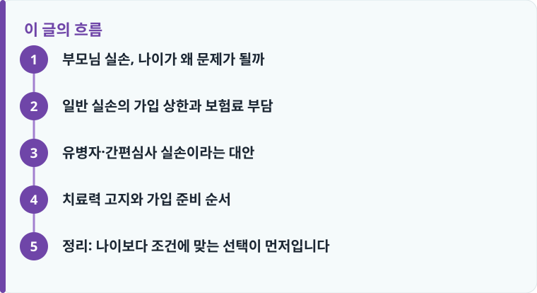

일반 실손은 상품별로 대개 60~75세까지 가입할 수 있고, 그 문턱을 넘으면 유병자·간편심사 실손을 검토하는 순서가 현실적입니다.
가입 상한 연령, 최근 3개월~5년 치료·투약 이력, 자기부담금 비율(급여 20%·비급여 30%)을 함께 확인해야 합니다.
고지 의무를 어기면 보험금 지급이 거절되거나 계약이 해지될 수 있어, 치료력은 사실대로 알리는 것이 안전합니다.
부모님 실손, 나이가 왜 문제가 될까
실손보험은 병원비 중 본인이 낸 금액을 보장해 주는 상품이라 나이가 들수록 실제로 가장 요긴한 보험입니다. 그런데 정작 병원 이용이 잦아지는 60대 이후에는 가입 자체가 쉽지 않습니다. 보험사 입장에서는 고연령·유병 상태일수록 보험금 지급 가능성이 높아 심사가 까다로워지고, 아예 신규 가입을 받지 않는 연령 구간도 있기 때문입니다. 실손이 어떤 구조로 병원비를 보장하는지 헷갈린다면 실손보험 기본 구조를 먼저 읽어 두면 이 글이 훨씬 쉽게 읽힙니다.
부모님 보험을 점검하다 보면 '이미 가입한 실손이 있는 줄 알았는데 없거나, 아주 오래된 1세대라 갱신 부담이 큰' 경우가 많습니다. 이때 무작정 새 상품에 가입시키기보다, 지금 부모님 연령에 가입이 가능한지, 가능하다면 어떤 유형이 맞는지부터 확인하는 것이 순서입니다. 부모님 보험 전체를 어디서부터 손봐야 할지 막막하다면 부모님 보험 점검 글에서 우선순위를 잡은 뒤 실손을 검토하는 편이 시행착오를 줄여 줍니다.
일반 실손의 가입 상한과 보험료 부담
표준화된 일반 실손보험은 상품별로 대개 60세, 65세, 많게는 75세까지 신규 가입을 받습니다. 상한 연령은 보험사와 상품에 따라 다르고, 같은 회사여도 판매 시점에 따라 바뀌므로 '몇 세까지 되는지'는 개별 상품설명서에서 확인해야 합니다. 상한 연령을 한 살이라도 넘기면 일반 실손 가입 창구 자체가 닫히므로, 부모님이 아직 상한 근처라면 미루지 말고 서두르는 편이 유리합니다.
가입이 되더라도 보험료 부담이 만만치 않습니다. 실손은 나이가 많을수록 위험률이 올라가 초기 보험료 자체가 높고, 4세대 실손처럼 1년마다 갱신되고 위험률·나이에 따라 매년 오르는 구조라면 고연령대일수록 인상 폭이 크게 느껴집니다. 여기에 4세대는 급여 20%·비급여 30%의 자기부담금과 비급여 이용량에 따른 할증·할인이 붙어, 병원을 자주 가는 부모님일수록 실제 부담이 달라집니다. 세대별 자기부담금과 갱신 구조가 궁금하다면 실손보험 세대별 차이를 함께 보면 판단이 쉬워집니다.
여기서 자주 나오는 고민이 '이미 있는 오래된 실손을 유지할지, 새로 갈아탈지'입니다. 부모님이 2009년 이전에 가입한 1세대 실손을 가지고 있다면 자기부담금이 거의 없어 보장은 두텁지만, 갱신 때마다 보험료가 크게 올라 고연령대에서는 부담이 커집니다. 반대로 4세대로 갈아타면 당장 보험료는 낮아지지만 자기부담금이 늘고 비급여 할증이 붙습니다. 병원 이용이 많은 부모님이라면 낮은 자기부담금이 유리해 무리한 전환이 오히려 손해일 수 있으니, 이용 빈도를 기준으로 손익을 따져 봐야 합니다.

유병자·간편심사 실손이라는 대안
일반 실손의 상한 연령을 넘겼거나, 이미 앓고 있는 질환 때문에 일반 심사를 통과하기 어렵다면 '유병자 실손' 또는 '간편심사(간편가입) 실손'이 현실적인 대안입니다. 간편심사 상품은 고지 항목을 크게 줄여, 흔히 '최근 3개월 이내 입원·수술·추가검사 소견, 최근 2년 내 질병·상해로 인한 입원·수술, 최근 5년 내 암 등 중대질환 진단·치료' 같은 몇 가지 질문에만 해당하지 않으면 가입할 수 있도록 문턱을 낮춘 상품입니다.
다만 문턱이 낮아진 만큼 대가가 있습니다. 같은 보장이라도 일반 실손보다 보험료가 높고, 자기부담금 비율이나 보장 한도가 일반 실손보다 불리하게 설계된 경우가 많습니다. 그래서 순서는 언제나 '일반 실손 가입 가능성 → 안 되면 유병자·간편심사 실손'입니다. 처음부터 간편심사로 가면 낼 필요 없는 보험료를 더 내는 셈이 될 수 있습니다. 실손만으로 부족한 진단·간병 목돈은 건강보험(질병보험)으로 나눠 대비하는 조합이 고연령대에서 특히 효과적입니다. 실손이 병원비의 본인부담을 채운다면, 질병보험은 진단비·수술비처럼 목돈이 필요한 순간을 메워 주기 때문입니다.
작성·검수 기준
이 글은 특정 보험사의 유병자·간편심사 실손 상품을 권유하기 위한 것이 아니라, 고연령 부모님의 실손 가입을 검토할 때 알아야 할 일반적인 기준을 설명하기 위해 작성했습니다. 가입 상한 연령, 간편심사 고지 항목, 자기부담금 비율은 가입 시점의 약관과 개별 상품, 보험회사 심사 기준에 따라 달라질 수 있습니다.
정확한 가입 가능 여부와 보장 범위는 본인 증권의 약관과 상품설명서, 그리고 보험 리모델링 안내를 함께 확인하는 것이 가장 정확합니다.
치료력 고지와 가입 준비 순서
고연령 실손 가입에서 가장 중요한 단계는 '고지 의무'입니다. 청약서의 질문 항목에 대해 사실대로 알리지 않으면, 나중에 보험금을 청구할 때 고지 의무 위반으로 지급이 거절되거나 계약이 해지될 수 있습니다. 특히 최근 병원 방문·투약 이력, 건강검진 재검·추가검사 소견은 부모님이 대수롭지 않게 넘기기 쉬운데, 이런 부분까지 정확히 정리해 두어야 합니다. 아래 순서대로 준비하면 시행착오를 줄일 수 있습니다.
준비 과정에서 실무적으로 도움이 되는 방법은, 청약 전에 부모님의 최근 진료 내역을 함께 확인해 두는 것입니다. 건강보험공단의 진료·투약 내역이나 병원 진료확인서를 통해 최근 몇 년간 어떤 진단과 약을 받았는지 정리해 두면, 청약서 질문에 정확히 답할 수 있고 나중에 분쟁 소지도 줄어듭니다. 만약 고혈압·당뇨처럼 약을 꾸준히 드시는 경우라면 일반 실손 심사에서 부담보(특정 부위·질환 보장 제외) 조건이 붙거나, 처음부터 간편심사 실손으로 방향을 잡는 편이 현실적입니다.
- 부모님 연령이 일반 실손의 가입 상한(대개 60~75세) 안에 드는지 먼저 확인합니다.
- 최근 3개월·2년·5년 기준으로 입원·수술·투약·중대질환 진단 이력을 정리합니다.
- 일반 실손 가입이 가능하면 우선 시도하고, 어려우면 유병자·간편심사 실손을 검토합니다.
- 자기부담금 비율(급여 20%·비급여 30%)과 갱신 주기, 예상 보험료를 함께 비교합니다.
- 실손으로 부족한 진단·간병 목돈은 질병보험과 조합해 전체 보장 공백을 메웁니다.
정리: 나이보다 조건에 맞는 선택이 먼저입니다
부모님 실손은 '나이가 많아서 안 된다'로 끝나는 문제가 아니라, 연령대와 치료력에 맞는 유형을 고르는 문제입니다. 일반 실손의 가입 상한 안에 있다면 서둘러 가입을 시도하고, 상한을 넘었거나 유병 상태라면 유병자·간편심사 실손과 질병보험 조합으로 방향을 바꾸면 됩니다. 어느 경우든 치료력은 사실대로 고지해야 나중에 보험금을 온전히 받을 수 있습니다.
다른 보험 정보 글이 궁금하다면 보험지식 블로그에서 이어 읽어 보세요. 가입 전에는 반드시 약관과 상품설명서를 확인하는 것이 가장 안전한 방법입니다.